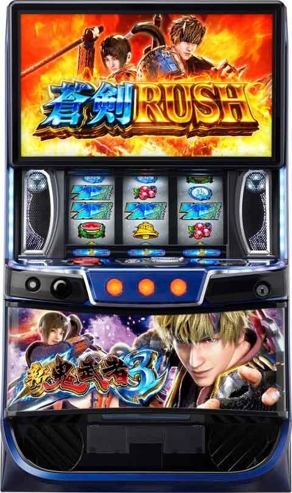
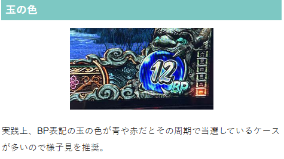
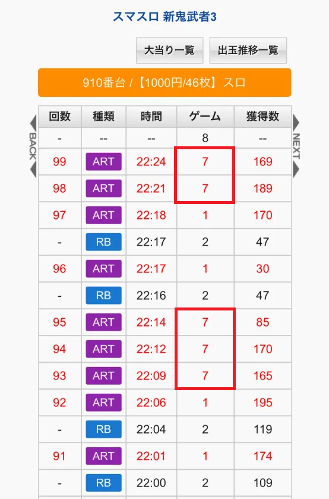
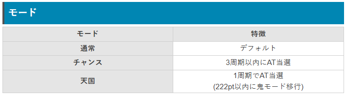
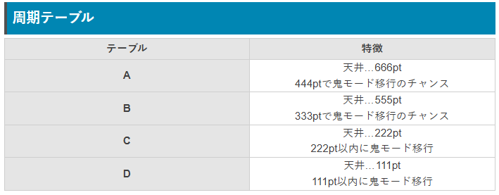
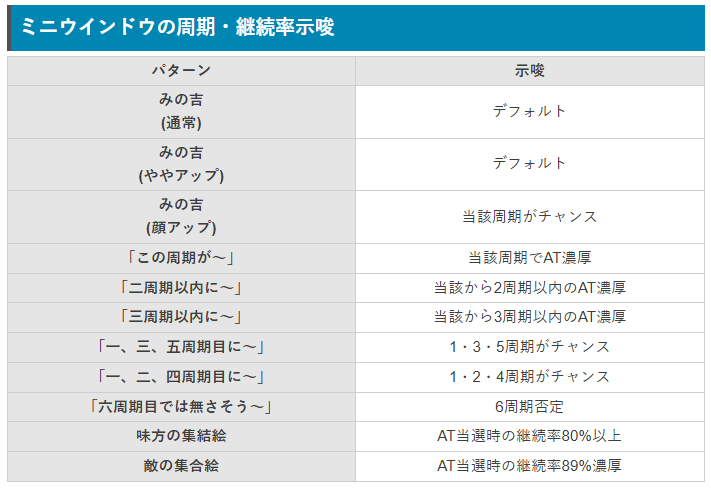
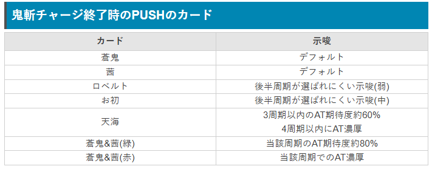
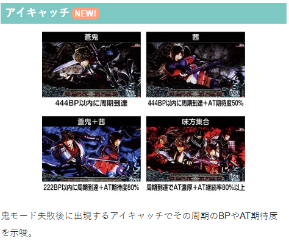

新鬼武者3

【天井情報】
通常時を1000G＋α消化、または最大6周期消化でATに当選。
設定変更時は最大4周期に短縮
周期到達 最大 666pt
555pt以上選択時は次周期最大222pt
設定変更時、AT終了時の1周期目は222pt以内で周期到達
【リセット判別】
不明
【有利区間について】
差枚数やエンディングで有利区間がリセットされた場合は「秀吉最終決戦」に突入。
狙い目
液晶またはメニュー画面から周期、ポイント、鬼モード履歴確認可能
【リセット狙い】
350Gから 目安2周期500pt以上
【ゲーム数(周期）天井狙い】
540Gから 目安4周期400pt以上
上位後 0Gから1周期消化まで
※上位後は店のデータ機と液晶が6から7ゲームくらいずれている。
※秀吉最終決戦（上位ATへのCZ）は、10セット継続時、エンディング後、1回のATで2500枚獲得が突入契機となる。
【周期pt狙い】
1周期
実ゲーム50-55Gくらいの場合 180ptから、または狙えない
実ゲーム100Gくらいの場合 130ptから
※50Gでのモニター演出確認してやめられてるケースが増えてきています。51Gや52Gやめされている台は示唆を確認されているため、1周期狙いは厳しそう。
※玉の色がデフォルト（白）かつ50Gのシャッター演出を確認された後は辛い可能性があるため、ボーダーを上げました。
2.3周期
500ptから
【玉の色狙い】
玉の色が青だと当該周期当選のチャンス。1周期なら不問で周期消化。
積極的に行くなら周期関係なく当該周期消化。
ただし1.3.5周期示唆が出てからの2周期目という様なパターンは、示唆で当該周期期待できないため玉の色青でも弱そう。
赤は不問で周期到達まで。
参考元 わたるパチスロジゴク耳（X）

【下2桁50G到達時のふすま演出（モニター演出）狙い】
1周期 下2桁 30Gから
1周期以降 下2桁 40Gから
※モニター演出での示唆が強いため単体で見る価値ありそう。
【示唆関連の押し引きについて】
モニター演出
当該、2周期以内濃厚はATまで
当該周期がチャンス（みの吉・大） 信頼度不明
3周期以内濃厚は当該当選見込める状況か、pt天井が残り200以内ならATまで？
味方集合、敵集合はAT性能上がるためAT当選まで？
鬼斬りチャージカード
蒼鬼＆茜(緑)、蒼鬼＆茜(赤) 当該周期消化
天海(緑) 扱い不明
アイキャッチ
蒼鬼+茜、味方集合 当該周期到達まで
茜 当該周期300pt以上なら周期到達まで
【AT後夕方ステージ即やめ台狙い】
AT後即やめ台で差枚プラスかつ夕方ステージの台 即前兆の鬼斬チャージの有無を確認。
参考元 0101｜期待値プラス
【有利区間関連狙い】
モニター演出の示唆が強すぎるため、50Gのモニター演出を確認して当該で当選期待出来るか、または3周期以内に当選が見込める場合に続行する様な感じになりそう。
差枚+1600枚以上
0Gから50Gのモニター演出を確認して、当該当選期待または3周期以内の当選濃厚なら続行。
差枚+1800枚以上
0Gから50Gのモニター演出を確認して、当該当選期待または4周期以内の当選濃厚なら続行。
※当該当選期待の示唆のみで外れた場合はやめが無難そう。
※秀吉最終決戦で有利区間リセットされると想定。
※1周期消化時にモニター演出やチャージ終了時のカードで3周期以内の当選が見込めそうなら続行するという立ち回りになりそう？
やめ時
AT後ヤメ。差枚等、何かしら続行するものが無ければヤメ。
本前兆中に鬼斬チャージ当選した場合は、AT後に夕方ステージスタートで即前兆から出てくる。
AT後夕方ステージスタートの場合は数ゲーム回して即前兆確認した方が良さそう？
ただし秀吉最終決戦失敗後は1周期目でAT当選濃厚のため1周期消化。
その他
履歴について
下記画像の赤枠の様なART7G（6Gの事もある）は上位AT（または秀吉決戦後）の履歴となる。
この場合は次回1周期目当選濃厚のため不問で1周期消化した方が良い。
また、上位後は店のデータ機と液晶が6から7ゲームくらいずれている。






参考元
基本情報
- メーカー: レオスター
- 機械割: 97.5% 〜 113.0%
- 導入開始日: 2025年10月06日（月）
- ゲーム性概要: ●イマーシブ筐体の第4弾 ●通常時は規定バッサリポイント到達時の抽選がAT当選のメイン契機 ●ポイント特化ゾーン「鬼斬チャージ」からのAT直行もあり ●AT「蒼剣ラッシュ」は純増約2.5枚で、初期ゲーム数は40G＋α（継続時は30G＋α） ●レア役での上乗せに加え、特化ゾーンも新たに搭載 ●ATゲーム数消化後は幻魔京バトルで継続ジャッジ ●継続時の一部で突入する覚醒チャレンジや第10話到達等で突入する秀吉最終決戦クリアで上位ATへ！！ ●上位AT「真蒼剣ラッシュ」は純増約5.5枚/G、継続率89%と超強力


打ち方
打ち方・小役
打ち方（小役狙い）
［最初に狙う絵柄］ 左リール上段付近にBARを目押し。チェリー・スイカは1枚で、狙わなくても払い出しは得られるためオールフリー打ちでも枚数的な損はない。ただ、成立役を正確に判別するために小役狙いを推奨だ。
［スイカ停止時は中リールにBARを目押し］ スイカ停止時以外は中＆右リールフリー打ちで消化しよう。
［レア役の停止形］ 基本的に「強ベル・強チェリー・強チャンス目」と「強リプレイ・強スイカ」成立時の抽選値はそれぞれ一緒になっているケースが多いため、強レア役A（強ベル・強チェリー・強チャンス目）、強レア役B（強リプレイ・強スイカ）という2系統で認識しておくとわかりやすい。 ただし、つねに同じわけではなく、状況によって強チェリーと強チャンス目成立時の抽選値が異なる…などのパターンもある。
［リーチ目役例］ リーチ目役Bのほうが上位の恩恵に期待できる。ちなみに、中段チェリー停止時は狙えばBARが右下がりに揃うぞ。
［押し順経由のチャンス目］ 押し順チャンス目は通常時のみ出現する可能性がある。
［ベルの種類］ ベルは共通ベル（3枚）、押し順4択ベル（11枚）、押し順6択ベル（11枚）の3種類。共通ベルは上段に揃う（AT中もナビは非発生）。
変則押しはNG
通常時は基本的に左1stで消化しよう。
解析情報通常時
小役関連
レア役確率
| 役 | 確率 |
|---|---|
| 強リプレイ | 1/13107.2 |
| 強ベル | 1/993.0 |
| 弱スイカ | 1/123.7 |
| 強スイカ | 1/13107.2 |
| 弱チェリー | 1/102.2 |
| 強チェリー | 1/269.7 |
| 弱チャンス目 | 1/168.9 |
| 強チャンス目 | 1/383.3 |
| 押し順弱チャンス目（通常時限定） | 1/193.1 |
| 押し順強チャンス目（通常時限定） | 1/393.8 |
| リーチ目役（リーチ目高確中限定） | 1/30.4 |
通常時のリーチ目出現確率
| 設定 | 確率 |
|---|---|
| 1 | 1/39364.3 |
通常時のリーチ目出現確率には設定差があるようだ。
レア役確率合算（リーチ目役除く）
| 状態 | 確率 |
|---|---|
| 通常時 | 1/25.7 |
| AT中 | 1/32.0 |
レア役の抽選
| 役 | 抽選 |
|---|---|
| 強リプレイ | 真・鬼斬チャージ以上濃厚 |
| 強ベル | 鬼斬チャージ以上濃厚 |
| 弱スイカ | 鬼斬チャージ抽選（低め）、 高確移行抽選 ※トータル当選率約36% |
| 強スイカ | 真・鬼斬チャージ以上濃厚 |
| 弱チェリー | 鬼斬チャージ抽選（低め）、 高確移行抽選 ※トータル当選率約36% |
| 強チェリー | 鬼斬チャージ以上濃厚 |
| 弱チャンス目 | 鬼斬チャージ抽選（当選率約33%） |
| 強チャンス目 | 鬼斬チャージ抽選（高め）、 高確中なら鬼斬チャージ以上濃厚 |
強チャンス目以外の強レア役は鬼斬チャージ以上濃厚。強スイカ・強リプレイなら真・鬼斬チャージ濃厚だ。
通常時のリーチ目役
通常時にリーチ目が停止した場合はAT直撃濃厚。リーチ目役Bだった場合は追加でATセットストックを1個獲得できる。
内部状態関連
高確概要
レア役で鬼斬チャージ非当選だった場合は高確移行を抽選。高確中はおもに比叡山ステージ（夕方）に移行して鬼斬チャージ当選率がアップする。高確中、再度高確に当選した場合は保障ゲームが再セットされる。
高確 性能
| 項目 | 内容 |
|---|---|
| 移行契機 | 鬼斬チャージ非当選時の 弱チェリー・弱スイカ時の38.3%（設定1） |
| 保障ゲーム数 | 12G |
| 平均滞在ゲーム数 | 約19G |
| 滞在中の恩恵 | 鬼斬チャージ当選率アップ |
バッサリポイント
バッサリポイント解説
1G消化で1BP以上加算されていき、押し順リプレイやレア役時は複数ポイント獲得のチャンス（ポイントは画面右下に表示）。 規定ポイント到達後はおもに鬼モードを経由してATへ移行する。 右側の漢数字は周期数（鬼モードのスルーで上昇）。最大6周期でAT濃厚!?
獲得できるバッサリポイント
| 契機 | 獲得 |
|---|---|
| 下記以外 | 1BP |
| 押し順リプレイ | 5BP |
| レア役 | 10～100BP |
［周期到達はテーブルで管理］ 鬼モード（周期抽選）移行までのポイントは4種類のテーブルで決まり、最大666BPで鬼モードに突入。 555BP以上が選ばれた場合はテーブル不問で次回222BP以内に鬼モードに移行する。
バッサリポイントテーブル
| テーブル | 特徴 |
|---|---|
| A | 444BPで鬼モード移行のチャンス 最大ポイント：666BP |
| B | 333BPで鬼モード移行のチャンス 最大ポイント：555BP |
| C | 222BP以内に鬼モード移行 最大ポイント：222BP |
| D | 111BP以内に鬼モード移行 最大ポイント：111BP |
テーブルごとの規定ポイント分布
| 規定ポイント | テーブルA | テーブルB | テーブルC | テーブルD |
|---|---|---|---|---|
| 111BP | 一 | 一 | △ | 周期到達 |
| 222BP | 一 | 一 | 周期到達 | 一 |
| 333BP | 一 | ◯ | 一 | 一 |
| 444BP | ◯ | △ | 一 | 一 |
| 555BP | ▲ | 周期到達 | 一 | 一 |
| 666BP | 周期到達 | 一 | 一 | 一 |
序列は△＜▲＜◯＜周期到達
鬼斬チャージ
鬼斬チャージ概要
通常時に突入するバッサリポイント獲得の特化ゾーン。毎ゲームポイントが加算されていき、小役を引けばセット継続濃厚、7セット目を継続させればAT濃厚、10セット目継続で鬼ガチチャンスへ移行する。 1セットのゲーム数は4G、上位版の真・鬼斬チャージなら6Gだ。
鬼斬チャージ性能
| 項目 | 内容 |
|---|---|
| 当選契機 | レア役の一部 |
| 継続ゲーム数 | 4G（真・鬼斬チャージは6G）の完走型ST |
| 消化中の抽選 | 小役揃いで再セット、 継続確定後のレア役はセット上乗せにも期待 |
| 特定セット 継続時の恩恵 | 7セット目継続でAT濃厚、 10セット目継続で鬼ガチチャンス＋AT濃厚 |
| その他 | AT当選後はATゲーム数の上乗せを抽選 |
［バッサリポイント獲得］ 毎ゲームバッサリポイントを獲得していき、小役時は継続かつ多めのポイント獲得に期待できる。継続確定後のレア役は大量ポイントだけでなく、セットストックにも期待できる。
鬼斬チャージ中に獲得できるバッサリポイント
| 契機 | 獲得 |
|---|---|
| 下記以外 | 5pt以上（ポイント獲得数：小） |
| ベル揃い・リプレイ | ポイント獲得数：中＋セット継続 |
| レア役 | ポイント獲得数：大＋セット継続 |
［真・鬼斬チャージ］
鬼ガチチャンス
鬼斬チャージ10セット継続時に移行する1G完結の報酬獲得ゾーン。 突入した時点でAT＋ボーナス濃厚、レア役（リーチ目役含む）を引ければ80%継続以上のATor上位ATへ移行する。 1Gでレア役を引くのは難しいが、引けた時の恩恵はかなり大きい。
鬼ガチチャンス性能
| 項目 | 内容 |
|---|---|
| 当選契機 | 鬼斬チャージ10セット継続時 |
| 継続ゲーム数 | 1G |
| 消化中の抽選 | レア役成立で継続率80%以上のATor上位ATへ |
| その他 | 突入した時点でAT＋ボーナス濃厚 |
鬼ガチチャンス成功当選率
| 役 | AT80%継続へ | AT89%継続へ | 上位ATへ |
|---|---|---|---|
| 弱レア役 | 74.7% | 24.9% | 0.4% |
| 強ベル | 一 | 75.0% | 25.0% |
| 強チェリー | 一 | 75.0% | 25.0% |
| 強チャンス目 | 一 | 75.0% | 25.0% |
| 強リプレイ | 一 | 一 | 100% |
| 強スイカ | 一 | 一 | 100% |
| リーチ目役A | 74.7% | 24.9% | 0.4% |
| リーチ目役B | 一 | 一 | 100% |
［成功時の恩恵は極大］ 完全勝利なら80%継続以上!?
覚醒なら上位AT!?
獲得ポイント振り分け
| 獲得 | その他 | リプレイ・ベル | 弱レア役 | 強レア役 |
|---|---|---|---|---|
| 5Pt | 100% | 一 | 一 | 一 |
| 10Pt | 一 | 49.6% | 一 | 一 |
| 20Pt | 一 | 43.4% | 一 | 一 |
| 30Pt | 一 | 5.9% | 64.1% | 一 |
| 50Pt | 一 | 0.8% | 29.7% | 一 |
| 100Pt | 一 | 0.4% | 5.5% | 66.8% |
| 200Pt | 一 | 一 | 0.8% | 33.2% |
成立役ごとの平均獲得ポイント
| 役 | 平均 |
|---|---|
| その他 | 5.0pt |
| リプレイ・ベル | 16.2pt |
| 弱レア役 | 41.1pt |
| 強レア役 | 133.2pt |
小役揃い時は10pt以上濃厚だ。
継続確定後の継続ストック当選率
| 役 | 当選率 |
|---|---|
| リプレイ・ベル | 4.7% |
| レア役 | 100% |
継続確定後は小役揃いで継続ストックを抽選、レア役はストック濃厚になる。
7セット目以降のATゲーム数上乗せ当選率
| 上乗せ | リプレイ・ベル | 弱レア役 | 強ベル | |||
|---|---|---|---|---|---|---|
| ＋5G | 100% | 一 | 一 | |||
| ＋10G | 一 | 95.3% | 一 | |||
| ＋30G | 一 | 4.3% | 92.6% | |||
| ＋50G | 一 | 0.4% | 6.3% | |||
| ＋100G | 一 | 一 | 1.2% | |||
| 上乗せ | 強チェリー | 強チャンス目 | 強リプレイ | 強スイカ | ||
| ＋5G | 一 | 一 | 一 | 一 | ||
| ＋10G | 一 | 一 | 一 | 一 | ||
| ＋30G | 92.6% | 92.6% | 一 | 一 | ||
| ＋50G | 6.3% | 6.3% | 一 | 一 | ||
| ＋100G | 1.2% | 1.2% | 100% | 100% |
7セット到達でAT濃厚となり、10セット目までATゲーム数の上乗せを抽選する。
鬼斬チャージ確率（設定1）
| 種別 | 確率 |
|---|---|
| 鬼斬チャージ | 1/84.4 |
| 真・鬼斬チャージ | 1/3860.5 |
| トータル | 1/82.6 |
強レア役の（真）鬼斬チャージ当選率 通常滞在時
| 役 | 鬼斬チャージ | 真・鬼斬チャージ | トータル |
|---|---|---|---|
| 強ベル | 98.8% | 1.2% | 100% |
| 強チェリー | 98.8% | 1.2% | 100% |
| 強チャンス目 | 59.4% | 0.8% | 60.2% |
| 強リプレイ | 一 | 100% | 100% |
| 強スイカ | 一 | 100% | 100% |
高確滞在時
| 役 | 鬼斬チャージ | 真・鬼斬チャージ | トータル |
|---|---|---|---|
| 強ベル | 93.8% | 6.3% | 100% |
| 強チェリー | 93.8% | 6.3% | 100% |
| 強チャンス目 | 98.8% | 1.2% | 100% |
| 強リプレイ | 一 | 100% | 100% |
| 強スイカ | 一 | 100% | 100% |
強レア役は鬼斬チャージの期待大。さらに、高確中は真・鬼斬チャージ当選に期待できる。
弱チェリー・スイカ
弱レア役契機の鬼斬チャージ当選率は高設定ほど優遇される。
平均継続率＆獲得ポイント
| 項目 | 鬼斬チャージ | 真・鬼斬チャージ |
|---|---|---|
| 平均継続率 | 66.6% | 86.1% |
| 平均獲得BT | 111.7BP | 390.1BP |
鬼斬チャージ中のAT直撃当選率
| 役 | 当選率 |
|---|---|
| 弱レア役 | 0.4% |
| 強ベル | 6.3% |
| 強チェリー | 6.3% |
| 強チャンス目 | 6.3% |
| 強リプレイ | 100% |
| 強スイカ | 100% |
継続セット数に関係なく、レア役時はポイントだけでなくAT直撃も抽選。AT当選後は小役成立でATゲーム数の上乗せが抽選される。
AT確定後のATゲーム数上乗せ当選率
7セット目継続後と同じく、最大10セット目までATゲーム数の上乗せを抽選。小役入賞で＋5G以上、強レア役は＋30G以上濃厚。強リプレイと強スイカは＋100G濃厚だ。
鬼モード
鬼モード概要
シリーズおなじみの前兆で、百鬼モードがデフォルト。千鬼や覚醒モードなら継続率66%以上のAT濃厚だ。
鬼モードごとの示唆
| 種別 | 示唆 |
|---|---|
| 百鬼モード | デフォルト |
| 千鬼モード | 継続率66%以上のAT濃厚 |
| 覚醒モード | 継続率89%のAT濃厚 |
［千鬼モード］
［覚醒モード］
鬼モード中の書き換え抽選
鬼モードはフェイクだった場合、レア役では通常時と同じ確率で鬼斬チャージを抽選、強スイカ・強リプレイ時は本前兆への書き換え濃厚。本前兆だった時はレア役でATセットストックを抽選する。
鬼モードを管理する3種類のモード
［モードは3種類］ 通常時は3つのモードで周期回数ごとのAT当選率が変化。天国時は1回目の周期抽選（鬼モード）で必ずATに当選する。
モードごとの特徴
| モード | 特徴 |
|---|---|
| 通常 | デフォルト |
| チャンス | 3周期（鬼モード3回）以内にAT当選 |
| 天国 | 1周期（1回目の鬼モード）でAT当選 ※222pt以内に鬼モード移行 |
モードを加味した周期期待度
| 周期 | 期待度 |
|---|---|
| 1周期目（鬼モード1回目） | 約30% |
| 3周期目まで（鬼モード3回目まで） | 約60% |
通常モードごとの天井周期回数分布
| 周期抽選回数 | 通常 | チャンス | 天国 |
|---|---|---|---|
| 1回目 | 一 | 一 | 天井 |
| 2回目 | 一 | ◎ | 一 |
| 3回目 | 一 | 天井 | 一 |
| 4回目 | ◎ | 一 | 一 |
| 5回目 | ◯ | 一 | 一 |
| 6回目 | 天井 | 一 | 一 |
序列は◯＜◎＜天井
鬼斬チャージ終了後の即突入
鬼斬チャージ終了後、即鬼モードに突入すれば AT期待度約80% と大チャンスだ。
本前兆中のATストック当選率
| 役 | 当選率 |
|---|---|
| 弱レア役 | 0.4% |
| 強ベル | 12.5% |
| 強チェリー | 12.5% |
| 強チャンス目 | 12.5% |
| 強リプレイ | 100% |
| 強スイカ | 100% |
鬼モードが本前兆だった場合はレア役でATセット数のストックを抽選。強リプレイと強スイカはストック2個獲得濃厚になる。
CZ・AT当選率
AT当選契機割合
周期抽選（鬼モード）経由の当選がメインになる。
フリーズ
ロングフリーズ
上位AT直行＋初期ゲーム数300G＋ATセットストック10個という超豪華な恩恵を獲得できる。
ロングフリーズ恩恵
真蒼剣RUSH（上位AT）直行＋ 初期ゲーム数300G＋ATストック10個濃厚
ロングフリーズ動画
ロングフリーズは上位AT直行＋初期ゲーム300G＋継続ストック10個を獲得する。
解析情報ボーナス時
蒼剣ラッシュ（AT）
AT概要
継続率管理のATで、消化中はゲーム数上乗せや鬼バトル（自力上乗せバトル）、リーチ目高確、鬼バトル高確などを抽選。蒼剣ボーナス（赤7揃い）・真蒼剣ボーナス（青7揃い）当選時の一部で特化ゾーン「鬼斬乱舞」に突入する。 ラストの幻魔京バトルで勝利すればセット継続だ。継続するかどうかは、セット開始時の1G目レバーON時に抽選される。
蒼剣ラッシュ（AT）性能
| 項目 | 内容 |
|---|---|
| 当選契機 | 規定バッサリポイント到達、 鬼斬チャージ7セット以上継続、リーチ目役の直撃など |
| 継続ゲーム数 | 初回セットは40G以上（2セット目以降は30G以上） ＋幻魔京バトル6G |
| 純増 | 約2.5枚/G |
| 継続率 | 50or66or80or89% |
| 消化中の抽選 | ゲーム数上乗せ（玉乗せ含む）、鬼バトル高確、 鬼バトル、リーチ目高確、ボーナス（直撃） |
※継続率は全設定共通かつ、鬼バトルやボーナス中のストックを含まない数値 ※継続率でセット継続した場合はセットストックは消費しない
［ゲーム数上乗せ］
［玉乗せ］ 今回も玉乗せ当選時は、ATゲーム数消化後の鬼武侠でゲーム数が告知される。
［鬼武侠］
玉乗せ時の上乗せゲーム数（鬼武侠で告知）
| 玉 | 上乗せゲーム数 |
|---|---|
| 白（体） | 10G以上 |
| 青（心） | 100G以上 |
| 黄（技） | 10G以上 |
| 緑（鬼） | 50G以上 |
| 赤（斬） | 10G以上 |
| 紫（滅） | 30G以上 |
| 桜 | 100G以上 |
| 椛 | 300G以上 |
［一閃フリーズ］ ゲーム数上乗せや玉乗せ時に発生する可能性がある昇格アクションだ。
レア役の抽選期待度序列
| 役 | 上乗せ | ボーナス | リーチ目 高確 | 鬼バトル | 鬼バトル 高確 |
|---|---|---|---|---|---|
| 強リプレイ | ◎ | ◎ | ◎ | ||
| 強ベル | ◎ | ○ | ◎ | ||
| 弱スイカ | ▲ | ▲ | ○ | ||
| 強スイカ | ◎ | ◎ | ◎ | ||
| 弱チェリー | △ | ▲ | ○ | ||
| 強チェリー | ◎ | ○ | ◎ | ||
| 弱チャンス目 | △ | ▲ | ○ | ||
| 強チャンス目 | ◎ | △ | ◎ |
レア役の特徴まとめ
| 役 | 特徴 |
|---|---|
| 強リプレイ | ＋100G以上濃厚 |
| 強ベル | ＋10G以上濃厚かつ一閃フリーズやボーナスに期待 |
| 弱スイカ | 上乗せ当選時は＋50G以上 |
| 強スイカ | ＋100G以上濃厚 |
| 弱チェリー | 上乗せや鬼バトル高確に期待 |
| 強チェリー | ＋10G以上濃厚かつ一閃フリーズやボーナスに期待 |
| 弱チャンス目 | 上乗せや鬼バトルに期待 |
| 強チャンス目 | ＋10G以上濃厚かつ一閃フリーズやボーナスに期待 |
液晶上で表示されなかった場合でも、弱レア役後は1G、強レア役後は3Gの内部的なリーチ目高確へ移行する。
ゲーム数上乗せのトータル当選率
| 役 | 当選率 |
|---|---|
| 弱スイカ | 3.1% |
| 弱チェリー | 16.0% |
| 弱チャンス目 | 21.1% |
| 強ベル | 100% |
| 強チェリー | 100% |
| 強チャンス目 | 100% |
| 強リプレイ | 100% |
| 強スイカ | 100% |
ゲーム数上乗せ当選時・一閃フリーズのトータル当選率
| 役 | 当選率 |
|---|---|
| 弱スイカ | 0.4% |
| 弱チェリー | 0.4% |
| 弱チャンス目 | 0.4% |
| 強ベル | 12.5% |
| 強チェリー | 12.5% |
| 強チャンス目 | 5.9% |
| 強リプレイ | 50.0% |
| 強スイカ | 50.0% |
ゲーム数上乗せ当選時、追加で一閃フリーズを抽選。強リプレイと強スイカは＋100G以上濃厚かつ、50%で一閃フリーズが発生するので 半分が＋200G以上になる。
成立役ごとのゲーム数上乗せ当選率詳細
| 上乗せ | 弱スイカ | 弱チェリー | 弱チャンス目 | 強ベル |
|---|---|---|---|---|
| ＋10G | 一 | 14.8% | 19.5% | 55.5% |
| ＋30G | 一 | 0.8% | 1.2% | 40.6% |
| ＋50G | 2.0% | 0.4% | 0.4% | 2.3% |
| ＋100G | 0.4% | 一 | 一 | 0.8% |
| ＋200G | 0.4% | 一 | 一 | 0.4% |
| ＋300G | 0.4% | 一 | 一 | 0.4% |
| 上乗せ | 強チェリー | 強チャンス目 | 強リプレイ | 強スイカ |
| ＋10G | 55.5% | 91.8% | 一 | 一 |
| ＋30G | 40.6% | 5.9% | 一 | 一 |
| ＋50G | 2.3% | 0.8% | 一 | 一 |
| ＋100G | 0.8% | 0.8% | 75.0% | 75.0% |
| ＋200G | 0.4% | 0.4% | 12.5% | 12.5% |
| ＋300G | 0.4% | 0.4% | 12.5% | 12.5% |
成立役ごとの一閃フリーズ当選率詳細
| 上乗せ | 弱スイカ | 弱チェリー | 弱チャンス目 | 強ベル |
|---|---|---|---|---|
| ＋100G | 一 | 一 | 一 | 10.2% |
| ＋200G | 一 | 一 | 一 | 1.6% |
| ＋300G | 0.4% | 0.4% | 0.4% | 0.8% |
| 上乗せ | 強チェリー | 強チャンス目 | 強リプレイ | 強スイカ |
| ＋100G | 10.2% | 4.7% | 37.5% | 37.5% |
| ＋200G | 1.6% | 0.8% | 6.3% | 6.3% |
| ＋300G | 0.8% | 0.4% | 6.3% | 6.3% |
設定4以上に限り、トータルが200or300or400or500or600Gの場合に特殊上乗せが発生する場合がある（上乗せ表示が＋4Gor＋5Gor＋6Gになる）。
レア役契機のボーナス当選率
| 役 | 通常滞在時 | 鬼バトル高確滞在時 |
|---|---|---|
| 弱スイカ | 0.4% | 0.4% |
| 弱チェリー | 0.4% | 0.4% |
| 弱チャンス目 | 0.4% | 0.4% |
| 強ベル | 9.4% | 9.4% |
| 強チェリー | 9.4% | 9.4% |
| 強チャンス目 | 5.5% | 5.5% |
| 強リプレイ | 50.0% | 100% |
| 強スイカ | 50.0% | 100% |
鬼バトル高確中のみ、強スイカ・強リプレイがボーナス濃厚になる。
ボーナス当選時の種別振り分け
| ボーナス | その他 | 強リプレイ・強スイカ |
|---|---|---|
| 鬼ボーナス | 50.0% | 一 |
| 蒼剣ボーナス | 42.2% | 50.0% |
| 真蒼剣ボーナス | 7.8% | 50.0% |
強スイカ・強リプレイ契機で当選したボーナスは蒼剣ボーナスor真蒼剣ボーナス濃厚だ（比率は1：1）。
ボーナス
ボーナス概要
ボーナスは3種類。レア役時はATセットストック獲得のチャンスとなる。
ボーナス性能
| 項目 | 内容 |
|---|---|
| 当選契機 | AT中のレア役の一部、リーチ目役、ベルフリーズ |
| 継続ゲーム数 | 10～30G（ボーナスの種類で変化） |
| 純増 | 約4.6枚/G（上位AT中は約5.5枚/G） |
| 消化中の抽選 | レア役でATセットストック抽選 |
| 終了後 | リーチ目高確へ移行 |
| その他 | 蒼剣ボーナス・真蒼剣ボーナスの一部で鬼斬乱舞突入 |
種類ごとの継続ゲーム数
| 種類 | 継続ゲーム数 |
|---|---|
| 鬼ボーナス（BAR揃い） | 10G |
| 蒼剣ボーナス（赤7揃い） | 20G |
| 真蒼剣ボーナス（青7揃い） | 30G |
［鬼ボーナス］
［蒼剣ボーナス］
［真蒼剣ボーナス］
［ATセットストック］ 今回もアイコンの色でストック個数が示唆される。
鬼斬乱舞解説
蒼剣ボーナス・真蒼剣ボーナス当選時の一部で突入するATゲーム数＆セットストックの上乗せ特化ゾーン。 終了後は当選していたボーナスがスタートする。
鬼斬乱舞 性能
| 項目 | 内容 |
|---|---|
| 当選契機 | 蒼剣ボーナス・真蒼剣ボーナス当選時の一部 |
| 継続ゲーム数 | 10G/セット |
| 消化中の抽選 | 成立役に応じてATゲーム数上乗せ抽選、 リーチ目役はATセットストック獲得 |
| 平均上乗せ | 約180G |
| 終了後 | 当選していたボーナスへ移行 |
鬼斬乱舞当選率
| 契機 | 当選率 |
|---|---|
| 蒼剣ボーナスor真蒼剣ボーナス当選時 | 6.3% |
上乗せゲーム数・ATストック振り分け （全役で必ず上乗せ）
| 上乗せ | その他 | 押し順ベル | リプレイ |
|---|---|---|---|
| ＋10G | 100% | 81.3% | 一 |
| ＋30G | 一 | 18.4% | 79.7% |
| ＋50G | 一 | 0.4% | 19.9% |
| ＋100G | 一 | 一 | 0.4% |
| ＋200G | 一 | 一 | 一 |
| ＋300G | 一 | 一 | 一 |
| ストック1個 | 一 | 一 | 一 |
| ストック2個 | 一 | 一 | 一 |
| ストック3個 | 一 | 一 | 一 |
| 上乗せ | 弱スイカ | 弱チェリー | 弱チャンス目 |
| ＋10G | 一 | 一 | 一 |
| ＋30G | 一 | 一 | 一 |
| ＋50G | 49.6% | 96.1% | 90.6% |
| ＋100G | 45.7% | 3.1% | 7.8% |
| ＋200G | 2.3% | 0.4% | 0.8% |
| ＋300G | 2.3% | 0.4% | 0.8% |
| ストック1個 | 一 | 一 | 一 |
| ストック2個 | 一 | 一 | 一 |
| ストック3個 | 一 | 一 | 一 |
| 上乗せ | 強ベル | 強チェリー | 強チャンス目 |
| ＋10G | 一 | 一 | 一 |
| ＋30G | 一 | 一 | 一 |
| ＋50G | 一 | 一 | 一 |
| ＋100G | 63.7% | 63.7% | 97.7% |
| ＋200G | 30.1% | 30.1% | 1.2% |
| ＋300G | 6.3% | 6.3% | 1.2% |
| ストック1個 | 一 | 一 | 一 |
| ストック2個 | 一 | 一 | 一 |
| ストック3個 | 一 | 一 | 一 |
| 上乗せ | 強リプレイ 強スイカ | リーチ目役A | リーチ目役B |
| ＋10G | 一 | 一 | 一 |
| ＋30G | 一 | 一 | 一 |
| ＋50G | 一 | 一 | 一 |
| ＋100G | 一 | 一 | 一 |
| ＋200G | 一 | 一 | 一 |
| ＋300G | 100% | 一 | 一 |
| ストック1個 | 一 | 99.6% | 一 |
| ストック2個 | 一 | 0.4% | 99.6% |
| ストック3個 | 一 | 一 | 0.4% |
リプレイなら＋30G以上、弱レア役は＋50G以上、強レア役は＋100G以上（強リプレイと強スイカは＋300G）。リーチ目役はゲーム数ではなくATのセットストックを獲得できる。
［技発動で大量上乗せのチャンス］
［上位ATでは覚醒蒼鬼が登場］ 通常のATでは茜、上位ATでは覚醒蒼鬼が登場する。
ボーナス中・ATストック当選率
| ストック | 弱レア役 | 強ベル | 強チェリー |
|---|---|---|---|
| ＋1個 | 0.4% | 60.5% | 60.5% |
| ＋2個 | 一 | 0.4% | 0.4% |
| ＋3個 | 一 | 一 | 一 |
| ストック | 強チャンス目 | 強リプレイ | 強スイカ |
| ＋1個 | 60.5% | 一 | 一 |
| ＋2個 | 0.4% | 75.0% | 75.0% |
| ＋3個 | 一 | 25.0% | 25.0% |
強リプレイと強スイカはストック2個以上濃厚だ。
ストック当選時はアイコンの色でストック個数を示唆。今回も青なら1個以上、赤なら2個以上濃厚!?
AT中ボーナス当選時の上乗せゲーム数
AT中はボーナスに当選した時点で10Gまたは100Gの上乗せ濃厚。ゲーム数はボーナス終了時に告知される。
ボーナス当選時の上乗せゲーム数振り分け
| 上乗せ | 振り分け |
|---|---|
| ＋10G | 99.6% |
| ＋100G | 0.4% |
上乗せゲーム数は全ボーナス共通。
リーチ目高確/鬼バトル高確
リーチ目高確解説
レア役の一部やボーナス終了後に移行するリーチ目の高確率状態（リーチ目でボーナス濃厚）。 帯の色にも注目しておこう。
リーチ目高確性能
| 項目 | 内容 |
|---|---|
| 移行契機 | レア役の一部、ボーナス終了後 |
| 継続ゲーム数 | 10G |
| リーチ目役確率 | 1/30.4 |
| その他 | ベルフリーズ発生率もアップ（発生でボーナス濃厚） |
ボーナス当選でゲーム数は再セットされる。
［狙え発生でチャンス！］
鬼バトル高確解説
弱チェリーを契機に移行する可能性がある鬼バトルの高確率状態。滞在中は全役で鬼バトルを抽選!?
鬼バトル高確性能
| 項目 | 内容 |
|---|---|
| 移行契機 | 弱チェリーの一部 |
| 恩恵 | 滞在中は鬼バトル当選率がアップ |
鬼バトル高確移行率
| 役 | 当選率 |
|---|---|
| 弱チェリー | 34.4% |
リーチ目高確当選率
| 役 | 通常滞在時 | 鬼バトル高確滞在時 |
|---|---|---|
| 弱スイカ | 16.0% | 32.8% |
| 弱チェリー | 一 | 一 |
| 弱チャンス目 | 一 | 一 |
| 強ベル | 60.5% | 90.6% |
| 強チェリー | 60.5% | 90.6% |
| 強チャンス目 | 44.5% | 94.5% |
| 強リプレイ | 50.0% | 一 |
| 強スイカ | 50.0% | 一 |
鬼バトル高確中はリーチ目高確当選率もアップ。 また、上記の抽選に漏れた場合でも、弱レア役は1G、強レア役は3Gの内部的なリーチ目高確へ移行する（液晶上では表示されない）。
［青帯］
［緑帯］
［赤帯］
帯色別のリーチ目高確種別示唆
| 帯色 | 示唆 |
|---|---|
| 青 | リーチ目高確A～Dすべての可能性あり |
| 緑 | リーチ目高確B以上濃厚 |
| 赤 | リーチ目高確D濃厚 |
※帯色は前作からの推測
リーチ目出現確率＆期待度
| 種別 | 確率 | 10G間での出現期待度 |
|---|---|---|
| リーチ目高確A | 1/30.4 | 28.5% |
| リーチ目高確B | 1/30.4 | 28.5% |
| リーチ目高確C | 1/30.4 | 28.5% |
| リーチ目高確D | 1/30.4 | 28.5% |
ベルフリーズ発生率
| 種別 | 発生率 |
|---|---|
| リーチ目高確A | 一 |
| リーチ目高確B | 5.9% |
| リーチ目高確C | 11.7% |
| リーチ目高確D | 19.9% |
ベルフリーズはリーチ目高確B以上でのみ発生する可能性あり。
ボーナストータル当選期待度
| 種別 | AT（蒼剣ラッシュ） | 上位AT（真蒼剣ラッシュ） |
|---|---|---|
| リーチ目高確A | 30.0% | 30.0% |
| リーチ目高確B | 50.0% | 55.0% |
| リーチ目高確C | 66.0% | 72.0% |
| リーチ目高確D | 80.0% | 86.0% |
リーチ目高確の種類によってベルフリーズ確率が異なるため、結果的にボーナス当選期待度が変化する。
鬼バトル
鬼バトル概要
おもにAT中の弱チャンス目契機で突入するATセットストックをかけた2G間の自力バトル。 ベルやリプレイを引けばチャンス、レア役以上なら勝利濃厚だ。 対戦キャラによって期待度が変化する。
鬼バトル性能
| 項目 | 内容 |
|---|---|
| 当選契機 | 弱チャンス目の一部 （鬼バトル高確中は全役抽選!?） |
| 継続ゲーム数 | 2G |
| 消化中の抽選 | ベル・リプレイでチャンス、レア役以上は勝利濃厚 |
| キャラごとの期待度 | ロベルト＜お初＜天海＜茜 |
| 勝利時の恩恵 | ATセットストック獲得 |
［ロベルト］
［お初］
［天海］
［茜］
鬼バトル当選率
| 役 | 非鬼バトル高確中 | 鬼バトル高確中 |
|---|---|---|
| その他 | 一 | 5.1% |
| 弱チェリー | 一 | 45.7% |
| 弱チャンス目 | 24.6% | 57.8% |
鬼バトルは基本的に弱チャンス目で抽選。鬼バトル高確中のみ弱チェリーもチャンスとなるだけでなく、全役で抽選される。
バトル種別振り分け＆平均勝利期待度
| バトル種別 | 振り分け | 勝利期待度 |
|---|---|---|
| ロベルト | 39.1% | 30.0% |
| お初 | 36.3% | 50.0% |
| 天海 | 19.9% | 64.1% |
| 茜 | 4.7% | 80.0% |
成立役ごとの勝利当選率
| バトル種別 | その他 | リプレイ | ベル | レア役 |
|---|---|---|---|---|
| ロベルト | 0.4% | 30.9% | 15.6% | 100% |
| お初 | 0.8% | 51.6% | 32.9% | 100% |
| 天海 | 1.6% | 60.2% | 49.2% | 100% |
| 茜 | 10.2% | 83.6% | 66.3% | 100% |
レア役はどのバトルでも勝利濃厚。リプレイはチャンスとなる。 強レア役時はATストック2個以上（最大3個）の特典付きだ。
幻魔京バトル
幻魔京バトル概要
ATゲーム数が0Gになると突入する6Gの継続ジャッジバトル。味方キャラが勝てばセット継続だ。 消化中はレア役でセットストックを抽選。勝利時の一部で上位ATをかけたCZ「覚醒チャレンジ」へ移行する可能性がある。
幻魔京バトル性能
| 項目 | 内容 |
|---|---|
| 移行契機 | ATゲーム数消化後 |
| 継続ゲーム数 | 6G |
| 消化中の抽選 | レア役でATセットストック抽選 |
| その他 | 勝利時の一部で覚醒チャレンジへ突入 |
［展開に注目］ 攻撃キャラや技のパターンで期待度が変化する。
セットストック当選率
幻魔京バトル中は強レア役を引いた時点でセットストック濃厚だ。
幻魔京バトル中・セットストック当選率
| ストック | 弱レア役 | 強ベル | 強チェリー |
|---|---|---|---|
| ＋1個 | 0.4% | 99.6% | 99.6% |
| ＋2個 | 一 | 0.4% | 0.4% |
| ＋3個 | 一 | 一 | 一 |
| ストック | 強チャンス目 | 強リプレイ | 強スイカ |
| ＋1個 | 99.6% | 一 | 一 |
| ＋2個 | 0.4% | 75.0% | 75.0% |
| ＋3個 | 一 | 25.0% | 25.0% |
エピソード（次回予告）抽選
ATセット開始時もしくは幻魔京バトル開始時（AT最終ゲーム）で発生する可能性あり。発生した時点でセット継続濃厚＋覚醒チャレンジ突入のチャンスとなる。幻魔京バトル開始時の次回予告は蒼鬼エピソードとなり、必ず覚醒チャレンジへ突入する。
エピソード発生タイミング別の恩恵
| タイミング | 恩恵 |
|---|---|
| ATセット開始時 | セット継続＋覚醒チャレンジ発生のチャンス |
| 幻魔京バトル開始時 | セット継続＋覚醒チャレンジ濃厚 |
エピソード発生時の覚醒チャレンジ発生率
| タイミング | 発生率 |
|---|---|
| 3話目 | 26.0% |
| 5話目 | 35.4% |
| 7話目 | 50.0% |
| 3・5・7話目以外 | 100% |
3・5・7話目継続時はエピソード発生のチャンス。その他のセットで発生した場合はタイミング不問で蒼鬼エピソード＝覚醒チャレンジ濃厚だ。
エピソードごとの覚醒チャレンジ当選率
| エピソード | 3話目 | 5話目 | 7話目 | その他 |
|---|---|---|---|---|
| 悪夢黎明 （蒼鬼） | 100% | 100% | 100% | 100% |
| 狂騒医師 （ロベルト） | 16.0% | 一 | 30.1% | 一 |
| 三成不敵 （天海） | 67.0% | 一 | 75.9% | 一 |
| 死線 （茜） | 一 | 81.2% | 86.3% | 一 |
| 淀君現る！ （お初） | 一 | 23.4% | 52.7% | 一 |
天海や茜エピソードが発生した場合は覚醒チャレンジ突入の大チャンスになる。
覚醒チャレンジ（上位CZ）
覚醒チャレンジ概要
AT中に突入する可能性がある上位ATをかけたCZ。3・5・7話時は突入のチャンスとなる。 消化中は狙えカットイン時にBARが揃えば成功。レア役契機で成功する場合もある。
覚醒チャレンジ（上位CZ）性能
| 項目 | 内容 |
|---|---|
| 移行契機 | ATセット継続時の一部 |
| 継続ゲーム数 | 10G |
| 成功期待度 | 35.8% |
| 消化中の抽選 | 上位ATを抽選 |
| 成功時の恩恵 | 上位AT移行＋セットストック1個獲得 |
［狙えカットイン］
覚醒チャレンジ突入率
3・5・7セット目は突入のチャンス。当選時はATセット開始画面のPUSHから覚醒チャレンジへ移行する。 AT中にエピソード（次回予告）が発生していた場合は突入の大チャンスだ。
エピソード発生時の期待度はコチラ
覚醒チャレンジ当選率
| ATセット数 | 当選率 |
|---|---|
| 3セット目 | 10.2% |
| 5セット目 | 20.3% |
| 7セット目 | 30.5% |
| 3・5・7セット目以外 | 0.4% |
上位AT抽選（成功抽選）
［BARを狙え］
BARを狙えDATA
| ウエイト発生率 | 1/2.3 |
|---|---|
| ウエイト発生時のBARを狙え発生率 | 約45% |
| BARを狙え発生確率 | 1/5.1 |
| 通常背景（青）時の期待度 | 14.9% |
| 虹背景時の期待度 | 100% |
| カットイン発生時の平均期待度 | 16.7% |
ウエイトが発生すればBARを狙えカットインや覚醒煽り発生のチャンス。 ウエイト中の画面エフェクトが虹色になる成功濃厚パターンもある。
虹色のカットインなら上位AT濃厚！
レア役時の上位AT当選率
| 役 | 当選率 |
|---|---|
| 弱レア役 | 12.5% |
| 強レア役 | 100% |
BAR揃いだけでなく、レア役成立時も上位ATを抽選。強レア役は上位AT濃厚だ。
［レア役時の覚醒煽り］
覚醒煽りのパターン別期待度
| パターン | 期待度 |
|---|---|
| 煽りからPUSHボタン出現 | 22.2% |
| 鬼PUSH | 96.1% |
| 目覚めよ鬼の力PUSH | 100% |
| 煽りなしで第三停止時PUSHボタン出現 | 100% |
鬼PUSHなら激アツだ。
目覚めよ鬼の力PUSHは成功濃厚となる。
秀吉最終決戦（上位CZ）
秀吉最終決戦概要
条件をクリアしたAT終了時やエンディング後に突入する上位ATをかけたCZ。 成否は開始時に抽選され、漏れた場合は消化中のレア役で成功への書き換えが抽選される。 失敗した場合は通常時に戻るが、 222pt以内のAT当選濃厚 になるため、AT当選まで続行しよう。
秀吉最終決戦（上位CZ）性能
| 項目 | 内容 |
|---|---|
| 移行契機 | AT終了時の一部、エンディング後 |
| 成功期待度 | 72.9% |
| 成功抽選 | 開始時に成否を抽選 （漏れた場合は消化中のレア役で書き換え抽選） |
| 成功時の恩恵 | 上位AT移行 |
| その他 | 失敗した場合でも222pt以内にATに当選 |
レア役時の書き換え当選率
開始時の成功抽選に漏れていた場合は、消化中のレア役で成功への書き換えを抽選。 内部的に成功が確定している場合は上位ATのセットストックを抽選する。強リプレイや強スイカを引けば、当該セットを含め、最低でも2セット以上の継続濃厚となる。
真蒼剣ラッシュ（上位AT）
上位AT概要
純増が約5.5枚/Gにアップして、継続率も89%固定なので超強力。ボーナスループ率もMAX86%とパワーアップしている。 失敗した場合は通常時に戻るが、 222pt以内のAT当選濃厚（実戦上） になるため、AT当選まで続行しよう。
真蒼剣ラッシュ（上位AT）性能
| 項目 | 内容 |
|---|---|
| 当選契機 | 秀吉最終決戦成功、覚醒チャレンジ成功、 ロングフリーズ、鬼ガチチャンス成功の一部 |
| 継続ゲーム数 | 1セット30G以上＋幻魔京バトル6G |
| 純増 | 約5.5枚/G |
| 継続率 | 89% |
| 消化中の抽選 | ゲーム数上乗せ（玉乗せ含む）、 リーチ目高確、ボーナス（直撃） |
※継続率は全設定共通かつ、鬼バトルやボーナス中のストックを含まない数値 ※継続率でセット継続した場合はセットストックは消費しない
ツラヌキ・有利区間
ツラヌキ条件＆恩恵
| 項目 | 内容 |
|---|---|
| 条件 | エンディング後 or AT第10話到達時のAT終了後 or 1回のATで2500枚以上獲得したAT終了後 |
| 恩恵 | 秀吉最終決戦（上位CZ）へ移行 |
上表の条件のいずれかを満たすと秀吉最終決戦へ突入。秀吉最終決戦に失敗した場合でも222pt以内のAT当選濃厚なので、即ヤメせずにAT当選まで打ち続けよう。
［エンディング］
演出情報
通常時
通常時のステージ示唆
| ステージ | 示唆 |
|---|---|
| 明智塚 | デフォルト |
| 堺港 | デフォルト |
| 比叡山 | 高確示唆 |
| 試練ノ道 | AT本前兆期待度約80% |
| 夜桜 | AT本前兆濃厚 |
［明智塚］
［堺港］
［比叡山］
［試練ノ道］
［夜桜］
ミニウィンドウみの吉の周期・AT継続率示唆
通常時のミニウィンドウ内に表示されるパターンで周期天井やAT当選時の継続率を示唆。 みの吉のセリフは周期天井、キャラの集結絵はAT継続率を示唆している。
ミニウィンドウの示唆
| パターン | 示唆 |
|---|---|
| みの吉［通常］ | デフォルト |
| みの吉［ややアップ］ | デフォルト |
| みの吉［顔アップ］ | 当該周期がチャンス |
| 「この周期が～」 （赤文字） | 当該周期でAT濃厚 |
| 「二周期以内に～」 （緑文字） | 当該から2周期以内のAT濃厚 |
| 「三周期以内に～」 （青文字） | 当該から3周期以内のAT濃厚 |
| 「一、三、五周期目に～」 （青文字） | 1・3・5周期がチャンス |
| 「一、二、四周期目に～」 （緑文字） | 1・2・4周期がチャンス |
| 「六周期目では無さそう～」 （青文字） | 6周期否定 |
| 鬼集結絵 | AT当選時の継続率80%以上 |
| 幻魔集合絵 | AT当選時の継続率89%濃厚 |
［みの吉セリフ：赤文字］
［鬼集結絵］
［幻魔集結絵］ 集結絵はどちらもステップアップとは異なるものなので間違いに注意しよう（集合絵の見た目も違う）。
アイキャッチの示唆
| アイキャッチ | 示唆 |
|---|---|
| 蒼鬼 | 444BP以内に周期到達濃厚 |
| 茜 | 444BP以内に周期到達濃厚かつAT期待度約50% |
| 蒼鬼＆茜 | 222BP以内に周期到達濃厚かつAT期待度約80% |
| 赤背景 | 次の周期で継続率80%以上のAT濃厚 |
［蒼鬼］
［茜］
［蒼鬼＆茜］
［赤背景］
ミッション系連続演出の鬼斬チャージ当選期待度
| ミッション | 期待度 |
|---|---|
| 研究所に潜入せよ！ | 50.0% |
| ロッスを撃ち抜け！ | 60.0% |
| 召喚を成功させろ！ | 71.0% |
| 鬼の門をこじ開けろ！ | 95.0% |
レア役を引いてもミッションに発展しないことが比較的に多い分、発展時の期待度は高めに設定されている。
［研究所に潜入せよ！］
［ロッスを撃ち抜け！］
［召喚を成功させろ！］
［鬼の門をこじ開けろ！］ ※画像は赤タイトル
タイトル変化や連続演出中のチャンスアップは発生した時点で期待できる。
鬼カウンターのパターン別示唆
液晶右下のカウンターの色で次回鬼モード（周期到達時）の期待度を、規定ポイント到達時のエフェクトで当該ゾーンの期待度が示唆される。
［カウンターの色］ 上画像は赤カウンター。
鬼カウンターの色別示唆
| カウンターの色 | 示唆 |
|---|---|
| 通常 | デフォルト |
| 青 | 次回周期（鬼モード）の本前兆期待度約60%超 |
| 赤 | 次回の次回周期（鬼モード）でAT濃厚 |
［カウンターエフェクト］ 上画像は緑エフェクト。
規定ポイント到達時のエフェクト色別示唆
| エフェクト | 示唆 |
|---|---|
| 青 | デフォルト |
| 緑 | 周期（鬼モード）到達濃厚 |
| 赤 | AT濃厚 |
鬼斬チャージ
終了時PUSHのカード示唆
鬼斬チャージ終了画面でボタンをPUSHするとカードで周期の期待度（テーブル）が示唆される。
カードごとの示唆
| カード | 示唆 |
|---|---|
| 蒼鬼 | デフォルト |
| 茜 | デフォルト |
| ロベルト | 後半周期が選ばれにくい示唆［弱］ |
| お初 | 後半周期が選ばれにくい示唆［中］ |
| 天海 | 3周期以内のAT期待度約60%かつ 4周期以内にAT濃厚 |
| 蒼鬼＆茜：緑 | 当該周期のAT期待度約80% |
| 蒼鬼＆茜：赤 | 当該周期でのAT濃厚 |
［蒼鬼］
［茜］
［ロベルト］
［お初］
［天海］
［蒼鬼＆茜：緑］
［蒼鬼＆茜：赤］
演出法則
| 演出 | 法則 | |
|---|---|---|
| 幻魔強襲 演出 | 三つ目 | 小役成立期待度約50%、 第1停止で茜が斬るorカットインで小役濃厚 |
| 幻魔強襲 演出 | 闇傀儡 | レア役濃厚 |
| 襖バッサリ 演出 | 通常襖 | 小役濃厚 |
| 襖バッサリ 演出 | 赤襖 | レア役濃厚 |
| 必殺演出 | 蒼鬼 | レア役濃厚 |
| 必殺演出 | 蒼鬼&茜 | 強レア役濃厚 |
| 鬼の目演出 | 青発光 | 小役濃厚 |
| 鬼の目演出 | 赤発光 | レア役濃厚 |
［幻魔強襲演出：闇傀儡］
［襖バッサリ演出：赤襖］
［必殺演出：蒼鬼＆茜］
［鬼の目演出］
鬼モード
演出法則
| 演出 | 法則 |
|---|---|
| 阿倫PUSH演出 | ● 白＜青＜緑＜赤＜金の順で期待度がアップ ● 金は本前兆濃厚 ● 赤が2回発生した場合はAT濃厚 |
| 矢文演出 | ● 好機：青…本前兆期待度約80% ● 好機：赤…本前兆期待度約95% ● 激熱…AT濃厚 |
阿倫PUSH演出は鬼モード中にPUSHボタン押すと発生するセリフ予告だ。
［矢文演出］
矢文に限らず「好機」文字が頻発すると本前兆のチャンス、赤色の好機なら大チャンス（実戦上）。
鬼モード中のチャンス演出一覧
| 演出 | 法則 |
|---|---|
| 魂演出 | 大パターンはチャンス |
| お初演出 | 夜背景なら大チャンス |
| 天海演出 | レア役否定で大チャンス |
| 松明演出 | レア役否定で大チャンス |
| 幻魔集結演出 | 発生した時点で大チャンス |
| タイトルカットイン演出 | 発生した時点で大チャンス |
| 襖擬似連演出 | 発生した時点で大チャンス |
［魂演出：大］
［お初演出：夜］ もちろん紅葉柄の肌着は激アツ！
［松明演出］
［幻魔集結演出］
［タイトルカットイン演出］ タイトルカットインは、鬼モード中に限らず、どこで発生しても大チャンスだ。
※タイトルカットイン画像は通常時のもの
［襖疑似連演出］ 継続するごとに襖の色が昇格。金まで行けば本前兆濃厚だ。
ボスバトル系連続演出期待度
| ボスバトル | 期待度 |
|---|---|
| 団右衛門を撃破せよ！ | 約12% |
| 大菩仁を撃破せよ！ | 約12% |
| 大哭蟷螂を撃破せよ！ | 約33% |
| ガルガントを撃破せよ！ | 約67% |
| 幻魔母樹を撃破せよ！ | 約95% |
ボスバトル系チャンスアップの期待度
| チャンスアップ | 期待度 |
|---|---|
| 赤タイトル | 約90% |
| 紅葉柄タイトル | 100% |
| 鬼文字：赤（鬼ノ力） | 90%以上 |
| 鬼文字：金（鬼ノ絆） | 100% |
［団右衛門を撃破せよ！］
［大菩仁を撃破せよ！］
［大哭蟷螂を撃破せよ！］ ※画像は赤タイトル
［ガルガントを撃破せよ！］
［幻魔母樹を撃破せよ！］
［紅葉柄タイトル］
［鬼文字パターン：赤］ 鬼文字は通常が黒。
［鬼文字パターン：金］ 幻魔母樹を撃破せよ！時は、赤でもチャンスアップが発生した時点でAT濃厚だ。
蒼剣ラッシュ（AT）
BGMの発生条件
| BGM | 発生条件 |
|---|---|
| Startin’ | AT突入後の100G以上の上乗せ後 |
| アンリミテッド | 当該セット継続時の一部 |
| 鬼武者3「青7BGM」 | 次回セットまで継続時の一部 |
| Infinite Blue | 真蒼剣RUSH(上位AT)専用楽曲 |
AT中の超注目パターン
| パターン | 恩恵 |
|---|---|
| キャラルーレット演出の全員集合 | ＋300G以上 or 鬼斬乱舞濃厚 |
| 気づき演出で酔っ払い登場 | 真蒼剣ボーナス以上濃厚 |
| 紅葉柄ガッチャ | ＋300G以上 or 鬼斬乱舞濃厚 |
| 鬼バトルでみの吉出現 | 複数ストック獲得濃厚 |
| セリフウインドウ演出のエンタライオン | 真蒼剣ボーナス以上濃厚 |
AT中に高期待度演出は多数あるが、なかでも上記5パターンは超激アツだ。
［キャラルーレット演出：全員集合］
［気づき演出：酔っ払い］
［紅葉柄ガッチャ］
［鬼バトル：みの吉出現］ まさかのみの吉参戦！
［セリフウインドウ演出のエンタライオン］
AT中の大チャンスパターン
| パターン | 恩恵 |
|---|---|
| 幻魔（レバーカットイン）演出 | ＋100G以上 or ＋50G以上＆ボーナス |
| キャラ告知の蒼鬼＆茜 | ＋100G以上 or 蒼剣ボーナス以上濃厚 |
| タイトルカットイン演出 | ＋100G以上 or 真蒼剣ボーナス以上濃厚 ※みの吉PUSH複合時は鬼斬乱舞濃厚 |
| 桜を見たら演出 | ＋3桁ゲーム数以上濃厚 ※強スイカ・強リプレイ時は一閃濃厚 |
| キャラルーレット演出の 蒼鬼＆茜 | ＋100G以上 or 蒼剣ボーナス以上濃厚 |
| ロッスW告知演出の同色告知 | 蒼剣ボーナス以上濃厚 |
| 弱紫告知（紫の骨兵士など） | ＋300G以上濃厚 |
| 紫色の告知からボーナス当選 | 蒼剣ボーナス以上濃厚 |
［幻魔演出（レバーカットイン）］ レバーON時にキャラのカットインが発生する。
［タイトルカットイン演出］
［桜を見たら演出］
桜玉獲得の大チャンス、 椛バージョンなら椛玉を獲得!?
［キャラルーレット演出：：蒼鬼＆茜］
［みの吉PUSH］
一閃キャラルーレット
［蒼鬼ver.］
［茜ver.］ 蒼鬼ではなく茜が登場すれば上乗せ200G以上濃厚（鬼斬乱舞中は除く）。
リーチ目を狙えカットインのボーナス期待度
| パターン | 期待度 |
|---|---|
| BARを狙え | 75.6% |
| 赤7を狙え | 91.4% |
| 青7を狙え | 100% |
リーチ目を狙えカットインごとの法則
| パターン | 法則 |
|---|---|
| BARを狙え | 赤エフェクトなら成功濃厚、 虹エフェクトは鬼斬乱舞濃厚 |
| 赤7を狙え | 赤エフェクトなら成功濃厚 |
| 青7を狙え | 真蒼剣ボーナス以上濃厚 |
［BARを狙え：青エフェクト］
［赤7を狙え：赤エフェクト］
［青7を狙え］
※出現キャラはATパターンによって変化
演出法則
| パターン | 恩恵 | |
|---|---|---|
| リールロック | 1段階目 | ● レア役・リーチ目対応 ● 約50%で強レア役が成立 |
| リールロック | 2段階目 | ● レア役・リーチ目対応 ● 強レア役なら＋50G以上濃厚 ● 弱レア役なら＋100G以上濃厚 ● 一閃フリーズ発生率アップ ● リーチ目なら蒼剣ボーナス以上濃厚 |
| キャラルーレット 演出 | ロベルト | ● スイカ・スベリ強チャンス目対応 ● その他のレア役なら＋100G以上濃厚 |
| キャラルーレット 演出 | お初 | ● チェリー・スベリなしチャンス目対応 ● その他のレア役なら＋50G以上濃厚 |
| キャラルーレット 演出 | 天海 | ● 強レア役対応 ● 弱レア役なら＋30G以上濃厚 |
| キャラルーレット 演出 | 蒼鬼＆茜 | ● ＋100G以上濃厚 |
| キャラルーレット 演出 | 全員集合 | ● ＋300G以上 or 鬼斬乱舞濃厚 |
| セリフウィンドウ 演出 | 蒼鬼＋秀吉 | ● 当該セットの継続率＆継続の成否示唆 ● 蒼鬼の青文字⇒継続期待度アップ ● 蒼鬼の青文字が2回発生⇒継続濃厚 ● 蒼鬼の赤文字⇒継続濃厚 ● 秀吉の青文字⇒継続率66%以上濃厚 ● 秀吉の赤文字⇒継続率80%以上濃厚 |
| セリフウィンドウ 演出 | 味方 | ● リーチ目示唆 |
| セリフウィンドウ 演出 | 敵＋味方 | ● 鬼バトル当選示唆 |
| セリフウィンドウ 演出 | 阿倫 | ● レア役・リーチ目示唆 |
| セリフウィンドウ 演出 | みの吉 | ● 遊技説明 |
［キャラルーレット演出］ ロベルトはスベリ系のレア役、お初はスベリなし系のレア役対応と覚えておけばわかりやすい。停止キャラ不問でリーチ目が停止する可能性がある。
［セリフウインドウ演出］ セリフ系はキャラによって示唆内容が変化。蒼鬼と秀吉はおもにATセット継続関連を示唆している。
ボーナス
確定文字の色別示唆
| 確定の文字色 | 示唆 |
|---|---|
| 白 | デフォルト |
| 赤 | 蒼剣ボーナス以上濃厚 |
| 金 | 真蒼剣ボーナス濃厚 |
［白］
［赤］
［金］
ボーナス終了画面の示唆
| パターン | 示唆 |
|---|---|
| 蒼鬼 | デフォルト |
| 覚醒鬼武者 | リーチ目高確C以上濃厚 |
［蒼鬼］ これがデフォルト。覚醒鬼武者ならリーチ目高確C以上濃厚だ。
［覚醒鬼武者］
鬼斬乱舞の演出別示唆
| パターン | 示唆 |
|---|---|
| 演出なし | ● ハズレor押し順ベル対応 |
| 覚醒斬演出 | ● ハズレ以外に対応 ● ＋30G以上の期待度アップ ● ハズレ成立時は＋30G以上濃厚 |
| 千里斬演出 （上位AT中は分身斬演出） | ● ハズレ以外に対応 ● レア役期待度40%以上 ● ＋50G以上の期待度アップ |
| リーチ目を狙え | ● ATセットの複数ストック濃厚 |
［AT中：覚醒斬］
［AT中：千里斬］
［AT中：リーチ目を狙え］
発生した時点で複数ストック濃厚！
［上位AT中：覚醒斬］ 見た目では少しわかりづらいが、上位ATでは「千里斬」のような文字は出ず、蒼鬼が分身して攻撃するのが強パターンとなる。
［上位AT中：分身斬］
［上位AT中：リーチ目を狙え］
鬼バトル
ズババカットインの文字色
| 文字色 | 示唆 |
|---|---|
| 黒 | デフォルト |
| 赤 | 勝利期待度90%以上 |
| 虹 | 勝利＋ATセットの複数ストック濃厚 |
ズババの文字色によって勝利期待度が変化する。
幻魔京バトル
［AT中］攻撃パターン別継続期待度
| 攻撃パターン | 選択率 | 継続期待度 |
|---|---|---|
| 弱攻撃 | 13.7% | 89.6% |
| 強攻撃 | 72.4% | 30.1% |
| 味方先制 | 13.9% | 100% |
秀吉の弱攻撃は大チャンス、強攻撃でも3割以上が勝利になる。 強攻撃時はカットインなどのチャンスアップパターンにも注目しておきたい。
［弱攻撃］
［強攻撃］
［味方先制］
［上位AT中］攻撃パターン別継続期待度
| 攻撃パターン | 選択率 | 継続期待度 |
|---|---|---|
| 弱攻撃 | 16.1% | 100% |
| 強攻撃 | 58.6% | 75.1% |
| 味方先制 | 25.3% | 100% |
上位AT中は弱攻撃なら継続濃厚、強攻撃でも75%以上が勝利となる。
［弱攻撃］
［強攻撃］
［味方先制］
カスタム
鬼鳴りモード
AT（蒼剣ラッシュ）中のゲーム数上乗せ時とリーチ目成立を先告知（Eフラッシュが発生）するモード。待機状態で一定時間経過後にPUSHボタンで変更できる。 Eフラッシュの色がピンクなら強パターンで豪華な恩恵に期待できる。
鬼鳴りモードの告知
| 色 | 上乗せ時 | ボーナス時 |
|---|---|---|
| 白 | 上乗せ濃厚かつ 第1停止時なら＋30G以上 | ボーナス以上 |
| ピンク | 一閃フリーズ濃厚 | 赤7以上＋鬼斬乱舞濃厚 |